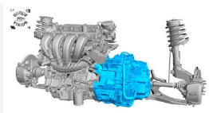
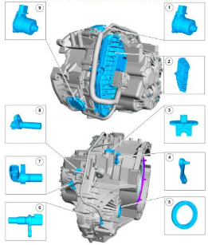
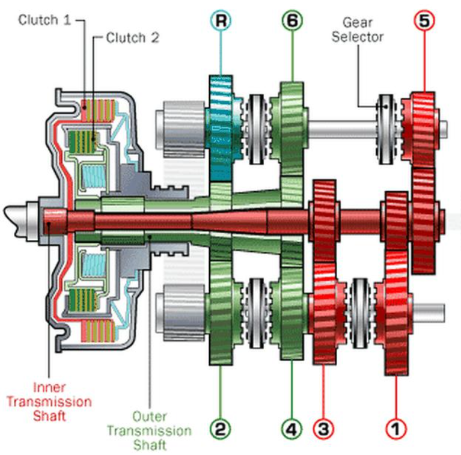
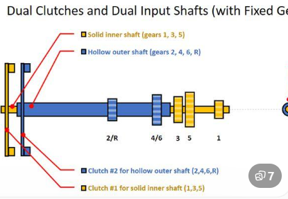
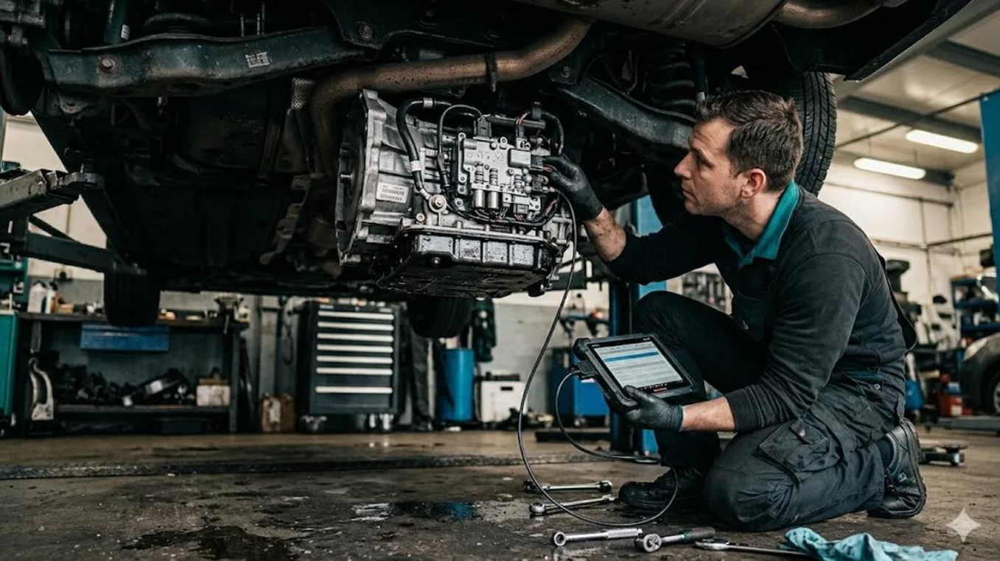
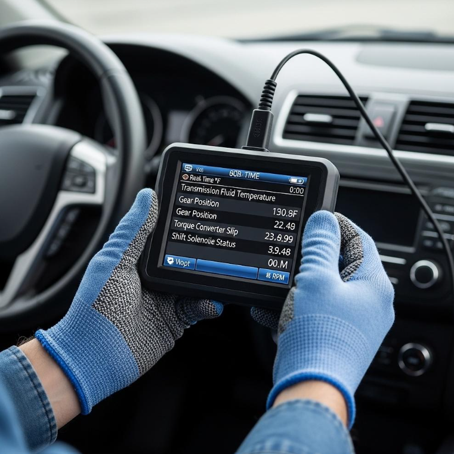
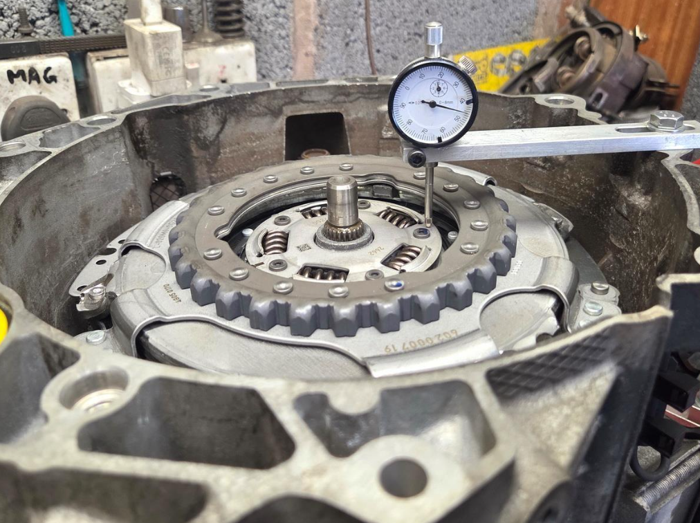
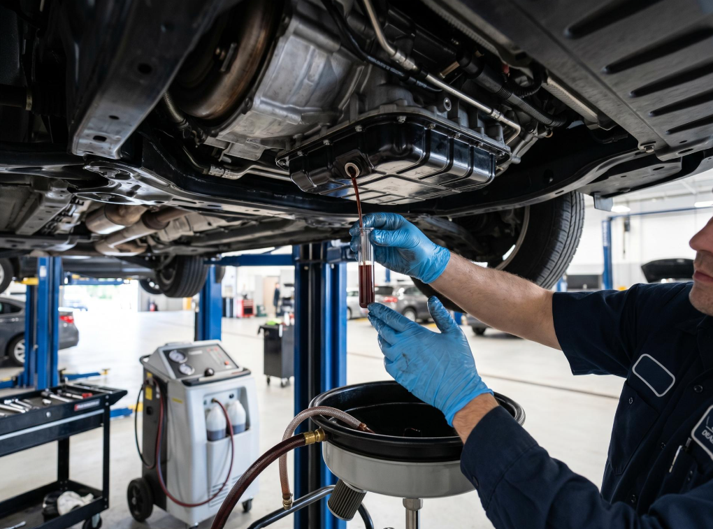

FICHA TÉCNICA TRANSMISIÓN POWER SHIFT
La transmisión PowerShift es una transmisión automatizada de doble embrague
(DCT, por sus siglas en inglés), diseñada para combinar la comodidad de una
transmisión automática con la eficiencia y rapidez de una transmisión manual.


Datos técnicos
Su funcionamiento se basa en dos embragues y dos conjuntos de engranajes:
- Un embrague controla las velocidades impares (1.ª, 3.ª, 5.ª).
- El otro embrague controla las velocidades pares (2.ª, 4.ª, 6.ª).
Mientras el vehículo circula en una velocidad, la siguiente marcha queda preseleccionada.
Al cambiar, un embrague se desacopla y el otro se acopla, permitiendo cambios rápidos sin
interrumpir significativamente la entrega de potencia.


Características principales
- Cambios rápidos: mejora la respuesta del vehículo.
- Eficiencia de combustible: puede consumir menos que una automática convencional, según el diseño y las condiciones de manejo.
- Funcionamiento automático: no requiere que el conductor accione un pedal de embrague.
- Versiones diferentes: existen PowerShift de embragues secos y húmedos, con distintas características de funcionamiento y mantenimiento.
¿ Qué inspecciones se recomiendan en esta transmisión ?
Inspección visual externa
- Buscar fugas de aceite en la carcasa, retenes y conexiones.
- Revisar daños, fisuras y tornillos flojos.
- Inspeccionar conectores eléctricos, arneses y puntos de conexión a tierra.

Diagnóstico electrónico
- Escanear el módulo de control de la transmisión (TCM).
- Registrar códigos de falla presentes, históricos y pendientes.
- Revisar datos en vivo, temperaturas, posiciones y parámetros de los actuadores disponibles.
- Comprobar si existen actualizaciones de software o calibraciones aplicables.

Prueba de funcionamiento
- Verificar el acoplamiento al seleccionar D y R.
- Evaluar cambios ascendentes y descendentes.
- Detectar vibraciones, tirones, patinamiento o retrasos.
- Comprobar el comportamiento en arranque, tráfico lento y reversa, cuando sea seguro.
Inspección de embragues y mecanismo de accionamiento
- Evaluar desgaste y contaminación de los embragues cuando sea accesible.
- Revisar actuadores, mecanismos de selección y horquillas según el diseño.
- Comprobar adaptaciones y valores de aprendizaje con el equipo de diagnóstico compatible.
- Inspeccionar el volante motor y los retenes si hay indicios de vibración o contaminación.

Revisión de lubricación y temperatura
- Verificar el nivel y estado del lubricante conforme al procedimiento del fabricante.
- Buscar contaminación, partículas metálicas u olor anormal.
- Revisar posibles problemas de sobretemperatura.
- Confirmar que se utilice el lubricante especificado para esa transmisión.

Procedimiento de calibración
Para el prcedimiento revisar el siguiente video
Video de Youtube
Para equipos de apoyo para aprendizaje de la transmisión PowerShift
Visita nuestra tienda
Escaners Automotrices
Revisar historial de mantenimientos
Ver historial de mantenimientos
Sigue nuestra página estaremos incluyendo información técnica de tu interés
Envíame un correo